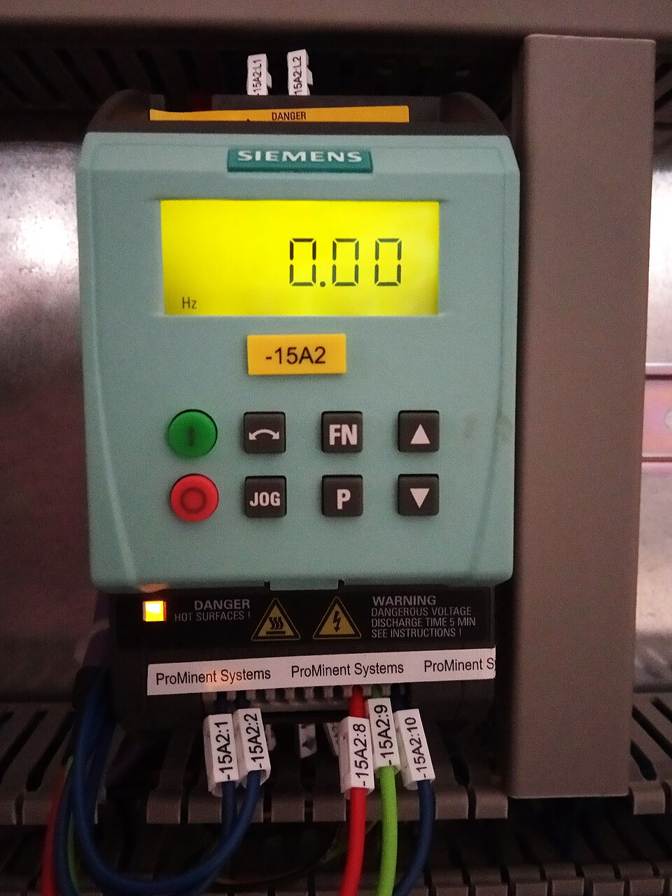

Diagnose a drive trip and trend motor condition
A fan stops after a speed increase. Practise using the drive’s status, a mechanical check and a repeatable trend to decide what evidence to collect next.
Read-only drive log exercise and a guarded, small battery or USB fan secured on a bench. Optional smartphone accelerometer or vibration meter with suitable sampling. An installed drive is an observation and documentation exercise for a supervised learner.
Identify what the drive can tell you
A variable-frequency drive changes the frequency and voltage supplied to a motor. Record the exact model, speed command and physical response, then copy the actual fault code and the recorded frequency/current at the trip. The manufacturer’s fault list defines the code. Leave drive settings and any restart command untouched during observation.

Photo by Sarah Adrita, resized. Original photo · CC BY-SA 4.0.


Photo by Zakali Jia, scaled for the course. Original · CC BY-SA 4.0.

Compare a fault with a known baseline
| Sample from a training log | Command | Observed | Next evidence |
|---|---|---|---|
| Healthy at steady load | 35 Hz | 34.9 Hz, 2.8 A, proof on | Record as baseline for this load and speed |
| Fault during ramp | 50 Hz | Trip at 40 Hz and 6.1 A | Compare ramp, speed, load and drive code. Mechanical inspection follows the site procedure. |
| Command present, no run | 35 Hz | Ready, zero output, no fault | Read enable/permissive and local/remote mode |
| Actuator running, no proof | 35 Hz | Current near baseline, proof absent | Check proof switch, mapping and stale data |
A trip after acceleration can be associated with torque demand, a mechanical obstruction, an incorrect ramp or drive settings. Preserve the log before a qualified person investigates. A generic current number cannot identify the cause on its own.
Create a repeatable vibration baseline
- Clamp the little trainer fan or place it on its normal rigid mount. Use the same sensor point, mounting orientation, speed and measurement setting on each run. Keep the sensor and hands clear of the blades.
- Log three stable runs. If the trainer has more than one speed, repeat at the second speed and keep the groups separate. A 1,500 rpm shaft makes 25 rotations per second. Frequency near that value can follow rotation but one peak does not establish imbalance.
- In the example trend 0.8, 0.9 and 1.0 mm/s rise later to 1.8 mm/s at the same point and speed. Check that the test conditions match, try a repeat and refer for inspection. Use the machine’s limits or approved baseline on the job.
Watch on YouTube · Compare sensor position and a repeatable measurement on the bearing or motor housing. Vibration Basics and Screening With The Fluke 805 Vibration Meter · Fluke Corporation.
A phone accelerometer can help compare trends on a small trainer. Dedicated instruments use documented frequency ranges and standardised mounting procedures. U.S. DOE maintenance and condition monitoring resources.
Close the ticket
Attach the fault code and timestamp, the same-speed baseline, and one next check justified by those observations. Put physical work and a retest under the site’s isolation and recommissioning procedures.
T19 · Motors and variable speed drives
T35 · Calibration, uncertainty and condition measurements